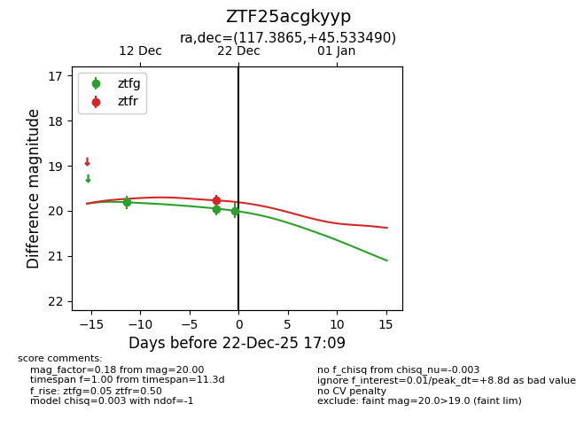
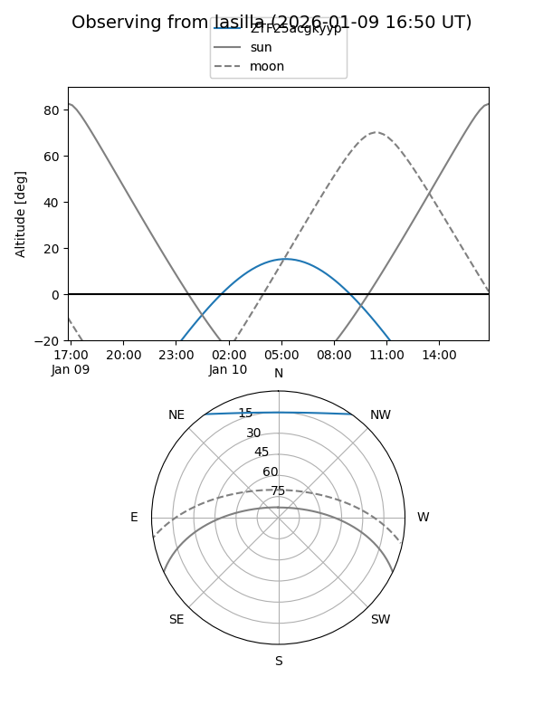
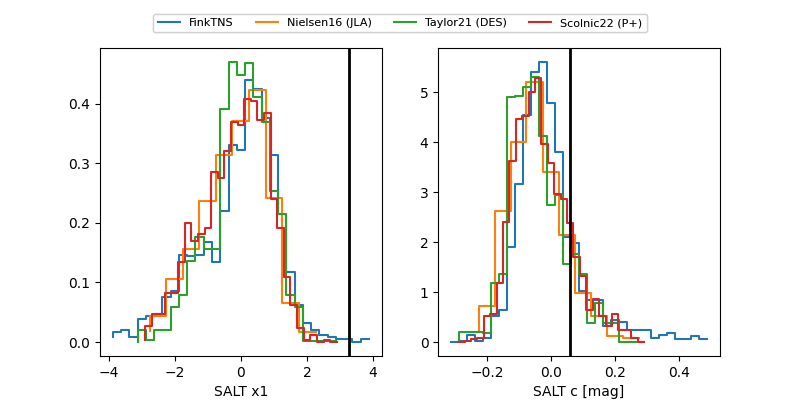

ZTF25acgkyyp
Target ZTF25acgkyyp at 2025-12-20 11:49
Aliases and brokers:
FINK: fink-portal.org/ZTF25acgkyyp
Lasair: lasair-ztf.lsst.ac.uk/objects/ZTF25acgkyyp
ALeRCE: alerce.online/object/ZTF25acgkyyp
alt names
ZTF25acgkyyp (ztf,fink_ztf)
Coordinates:
equatorial (ra, dec) = 117.3865,+45.53349
equatorial (HMS+DMS) = 07:49:32.77,+45:32:00.56
galactic (l, b) = (173.6313,+28.80283)
Flags:
Photometry:
last ztfg=19.81, ztfr=19.77
1 ztfg, 1 ztfr detections
Lightcurve

Visibility


Additional plots
